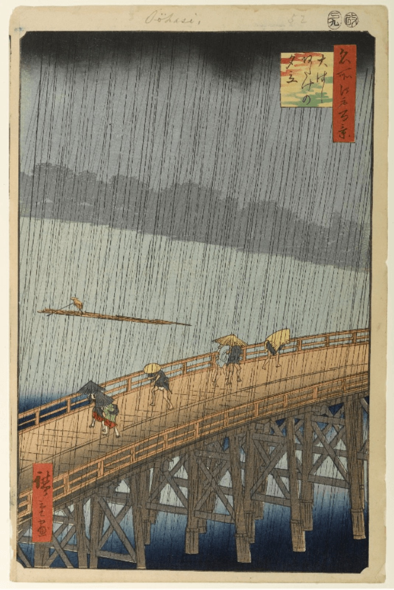
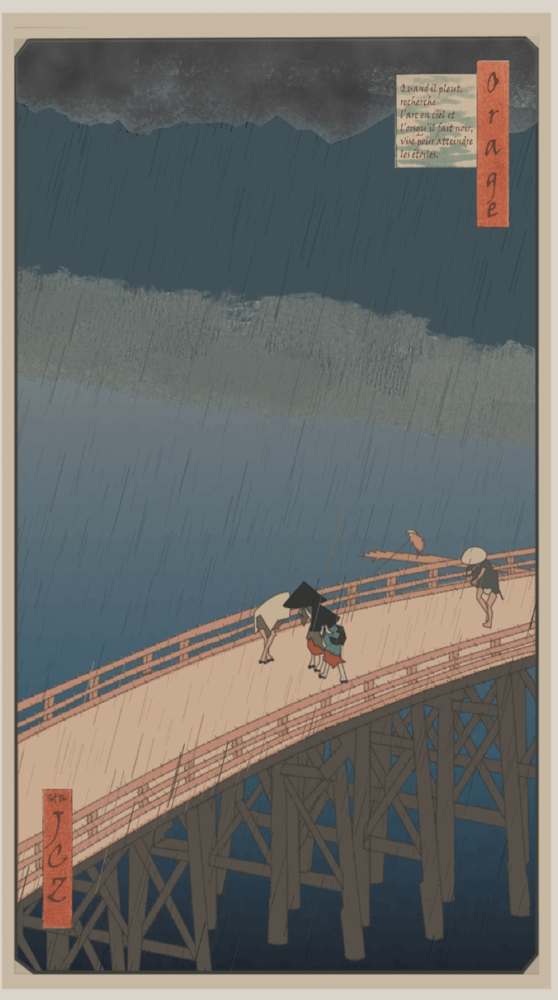

Cliquer pour regarder
Animation 2D/3D
(22/22)
Une estampe japonaise ancienne, ramenée à la vie en animation 2D.
Le but : animer une œuvre d'art ancienne avec les techniques d'animation 2D, dans After Effects.
(Processus)
L'œuvre d'origine et sa nouvelle version.
Le point de départ : une estampe d'Hiroshige, des passants surpris par une averse sur un pont.

L'image est découpée en couches et animée : la pluie tombe, les passants traversent le pont. J'ai aussi fait le montage sonore.

Images2 photos